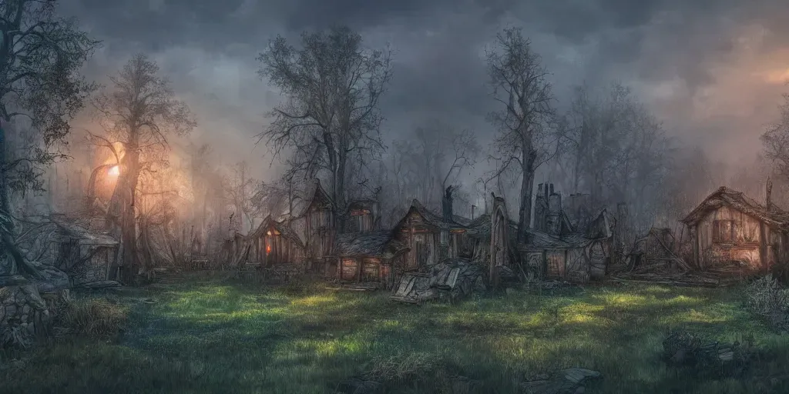

Лагерь
Людские ресурсы (27)
- 4 элиты (игроки)
- 10 лучниц
- 1 воительница (Фреска)
- 1 бард (Инжрих)
- 6 полевых медика (женщины)
- 4 роги (приближённый Гаврика - Матиаш)
- 16 пехоты
Припасы: 25 единиц
- 3 лошади (больные)
- Казарма (11 человек)
- Два дома (8+6 человек)
- Склад
- Дом для переговоров с импровизированной молельной (самый маленький и самый разрушенный)
- Два почти полностью развалившихся дома
Возможные улучшения
- Конюшня на N лошадей (одна лошадь - один припас) +2
- Выгребная яма (2) +
- Церковь (7)
- Арсенал (5)
- Рекрутский отряд (4) + (2 рога 2 пехота))
- Жилой дом на 4 человека (1 дом - один припас) +2
- Починка всех домов (5)
